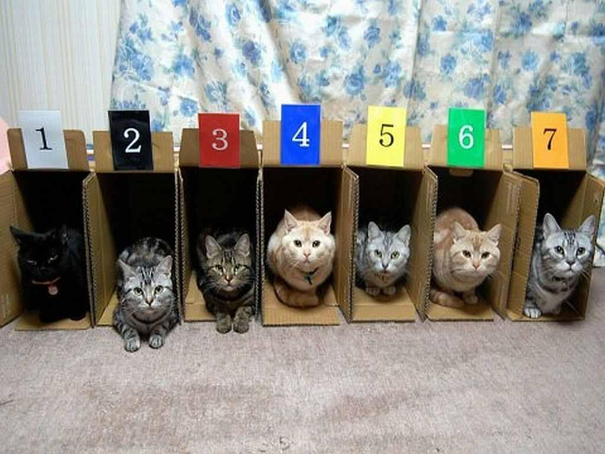

interface Function<F,T> {
T apply(F input);
}
class SquareFunction implements Function<Long,Long> {
Long apply(Long number) {
return number * number;
}
}
(defn square [number]
(* number number))
### Java Syntax
```java
println("Hello sailor!");
```
### Lisp Syntax
```clojure
(println "Hello sailor!")
```
### Lists
```clojure
(println "Hello sailor!")
("Rainbow Dash" "Twilight Sparkle" "Pinkie Pie")
(0 1 1 2 3 5 8 13 21 34 55)
```
Homoiconic
- Your code is a data structure
- Makes metaprogramming easy
- Macros
Data structures
;; List (linked list)
("Rainbow Dash" "Twilight Sparkle" "Pinkie Pie")
;; Vector (array list)
["Fluttershy" "Rarity" "Applejack"]
;; Map (hash map)
{"name" "Rainbow Dash", "type" "Pegasus pony"}
### All the syntax you need
```clojure
(println "Hello sailor!")
(println "2 + 2 = " (+ 2 2))
(defn add [number1 number2]
(+ number1 number2))
```
Immutable Data Structures
- No unexpected side effects guaranteed
- The easy way to thread safety
- No, they're not slow
### Look ma, no mutation
```clojure
(def primes [2 3 5 7 11 13])
(assoc primes 3 42)
```
### Functions as values
```clojure
(defn square [number]
(* number number))
(def fibonacci [0 1 1 2 3 5 8 13 21 34 55])
```
### Higher order functions
```clojure
(defn plus-two [number]
(+ 2 number))
(defn plus-something [something]
(fn [number]
(+ something number)))
```
### Combinators
```clojure
(defn function-plus-something [function]
(fn [number]
(+ something (function number))))
```

MULTI-CORE LIKE A BOSS
### State gonna state
```clojure
(def counter-state (atom 0))
(defn count-up []
(swap! counter-state inc)
@counter-state)
```
### Threads so simple you could cry
```clojure
(defn sum-to [n]
(reduce + (range n)))
; (sum-to 250000000)
```
ClojureScript
- A subset of Clojure
- Compiles to Javascript
- Can use Javascript APIs
- NO MORE JAVASCRIPT!